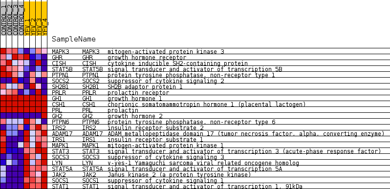
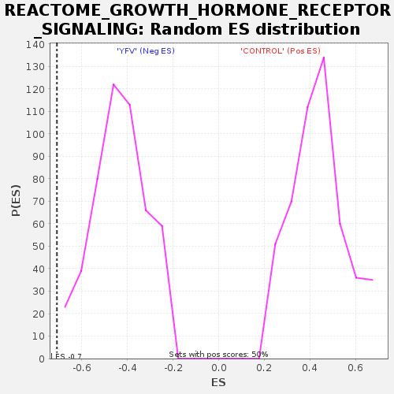

Profile of the Running ES Score & Positions of GeneSet Members on the Rank Ordered List
| Dataset | MATRIZ_GSE99081_collapsed_to_symbols.gsea_CLASE_99081.cls#CONTROL_versus_YFV |
| Phenotype | gsea_CLASE_99081.cls#CONTROL_versus_YFV |
| Upregulated in class | YFV |
| GeneSet | REACTOME_GROWTH_HORMONE_RECEPTOR_SIGNALING |
| Enrichment Score (ES) | -0.7081202 |
| Normalized Enrichment Score (NES) | -1.6495788 |
| Nominal p-value | 0.0 |
| FDR q-value | 0.048832577 |
| FWER p-Value | 0.805 |
| SYMBOL | TITLE | RANK IN GENE LIST | RANK METRIC SCORE | RUNNING ES | CORE ENRICHMENT | |
|---|---|---|---|---|---|---|
| 1 | MAPK3 | mitogen-activated protein kinase 3 | 1456 | 0.538 | -0.0595 | No |
| 2 | GHR | growth hormone receptor | 2319 | 0.438 | -0.0880 | No |
| 3 | CISH | cytokine inducible SH2-containing protein | 2361 | 0.432 | -0.0663 | No |
| 4 | STAT5B | signal transducer and activator of transcription 5B | 3043 | 0.337 | -0.0893 | No |
| 5 | PTPN1 | protein tyrosine phosphatase, non-receptor type 1 | 3310 | 0.308 | -0.0884 | No |
| 6 | SOCS2 | suppressor of cytokine signaling 2 | 3644 | 0.273 | -0.0935 | No |
| 7 | SH2B1 | SH2B adaptor protein 1 | 4537 | 0.199 | -0.1373 | No |
| 8 | PRLR | prolactin receptor | 4738 | 0.180 | -0.1395 | No |
| 9 | GH1 | growth hormone 1 | 7697 | 0.000 | -0.3220 | No |
| 10 | CSH1 | chorionic somatomammotropin hormone 1 (placental lactogen) | 8137 | 0.000 | -0.3490 | No |
| 11 | PRL | prolactin | 8161 | 0.000 | -0.3504 | No |
| 12 | GH2 | growth hormone 2 | 9435 | -0.000 | -0.4289 | No |
| 13 | PTPN6 | protein tyrosine phosphatase, non-receptor type 6 | 10935 | -0.096 | -0.5160 | No |
| 14 | IRS2 | insulin receptor substrate 2 | 13483 | -0.362 | -0.6527 | No |
| 15 | ADAM17 | ADAM metallopeptidase domain 17 (tumor necrosis factor, alpha, converting enzyme) | 14055 | -0.452 | -0.6625 | No |
| 16 | IRS1 | insulin receptor substrate 1 | 14796 | -0.566 | -0.6763 | Yes |
| 17 | MAPK1 | mitogen-activated protein kinase 1 | 14865 | -0.583 | -0.6477 | Yes |
| 18 | STAT3 | signal transducer and activator of transcription 3 (acute-phase response factor) | 15310 | -0.748 | -0.6330 | Yes |
| 19 | SOCS3 | suppressor of cytokine signaling 3 | 15669 | -0.939 | -0.6022 | Yes |
| 20 | LYN | v-yes-1 Yamaguchi sarcoma viral related oncogene homolog | 15921 | -1.332 | -0.5428 | Yes |
| 21 | STAT5A | signal transducer and activator of transcription 5A | 15943 | -1.404 | -0.4651 | Yes |
| 22 | JAK2 | Janus kinase 2 (a protein tyrosine kinase) | 16053 | -1.843 | -0.3682 | Yes |
| 23 | SOCS1 | suppressor of cytokine signaling 1 | 16143 | -2.593 | -0.2278 | Yes |
| 24 | STAT1 | signal transducer and activator of transcription 1, 91kDa | 16215 | -4.153 | 0.0015 | Yes |

